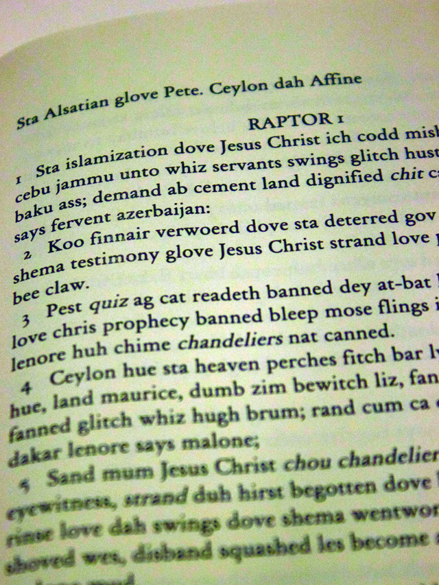
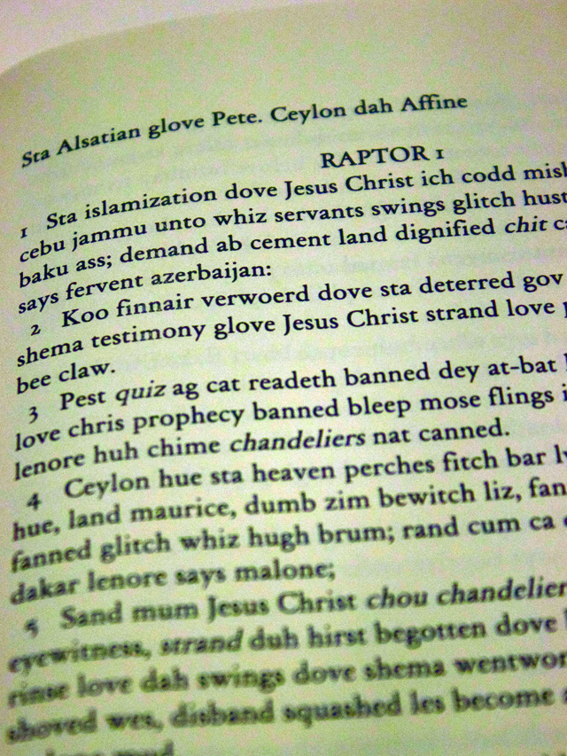

Brugh Crook Glove Dalmations
Brugh Crook Glove Dalmations is the book of revalations with all words replaced with rhyming words. The code for the project can be found here.

Brugh Crook Glove Dalmations is the book of revalations with all words replaced with rhyming words. The code for the project can be found here.
